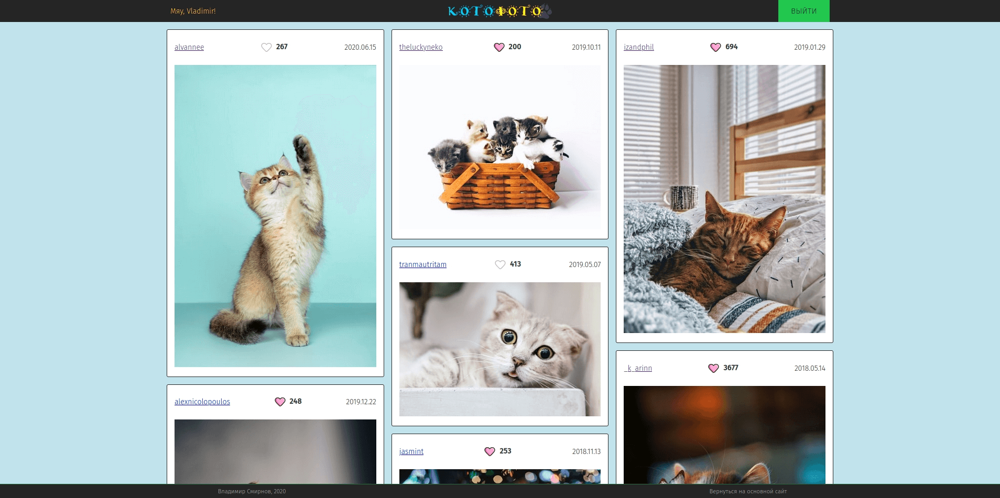
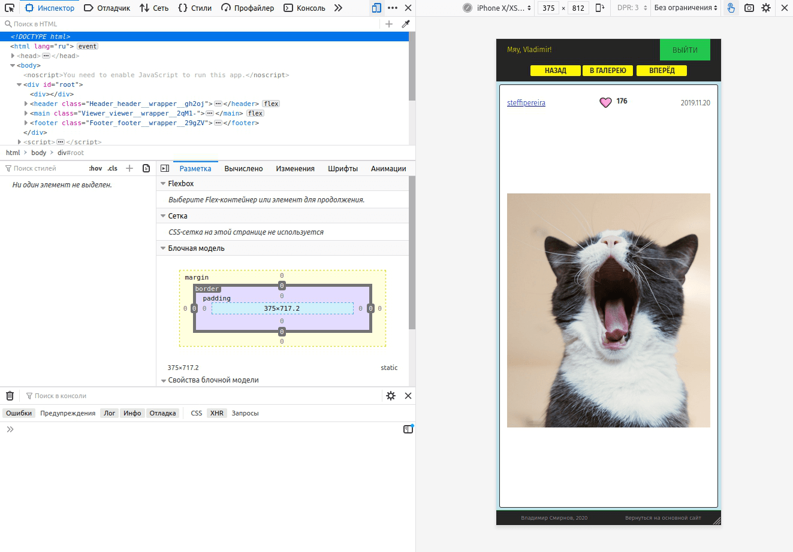
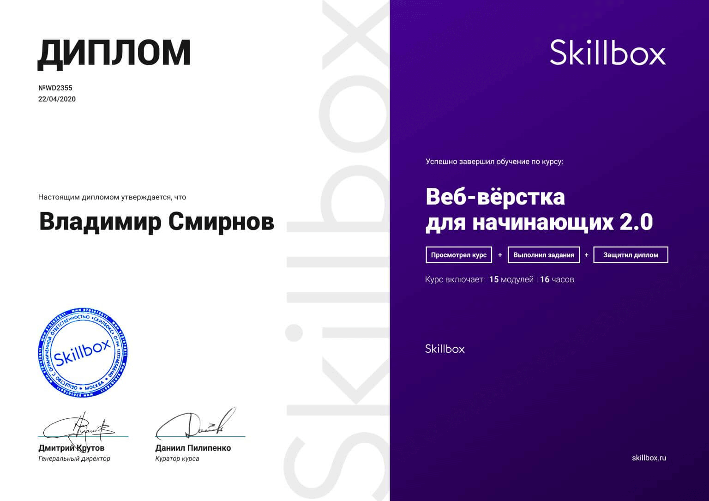
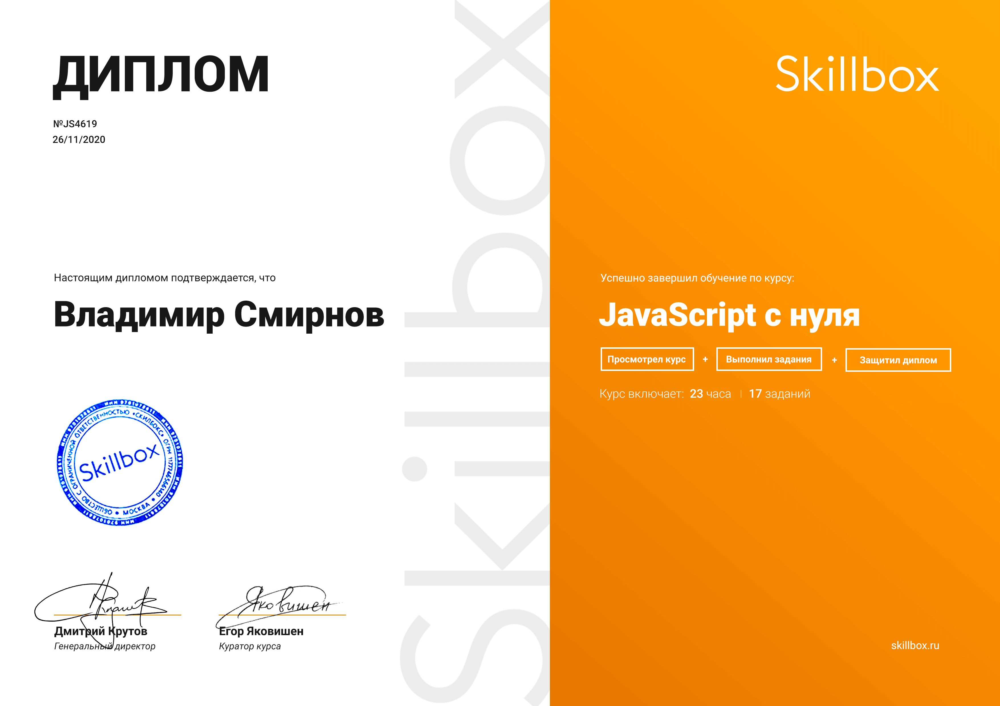

HTML 5

Хорошо понимаю специфику HTML пятой редакции, использую семантические теги и атрибуты доступности. Всегда думаю о посетителях сайта, поисковых роботах и разработчиках, которые будут работать с моей разметкой.
Это сайт-портфолио для
работодателей.
Мой стек на данный момент: HTML5, CSS/SCSS, Vanilla JavaScript, React,
Redux,
jQuery, AJAX, Gulp, WebPack, Git и PHP (базовый уровень).
Хорошо понимаю специфику HTML пятой редакции, использую семантические теги и атрибуты доступности. Всегда думаю о посетителях сайта, поисковых роботах и разработчиках, которые будут работать с моей разметкой.

В основном пишу стили на препроцессоре. Уже не понимаю как жить без переменных, вложенности и импортов - стараюсь дробить любой проект на модули, чтобы было легко его поддерживать.

В настоящий момент в изучении JavaScript делаю акцент на чистую, "ванильную" версию. Различные готовые решения и дополнительные библиотеки, такие как jQuery, использовать умею, но стараюсь не злоупотреблять.

Активно осваиваю React и Redux - хотелось бы развиваться в сторону разработки приложений и интерфейсов. Защитил диплом с моим первым MVC-приложением на React. Сейчас начал работу по двум новым персональным проектам.
Сборщики использую всегда. Сначала изучил Gulp, затем перешёл на WebPack. Могу настроить базовый конфиг - сервер, сборку, uglify, css/scss-лоадеры, sourcemap, вот это всё.
Управление проектами - три года руководил проектами в веб-студии. Знаю основы, заглядывал в PMBoK и даже BABoK (посещал курсы по BA в EPAM).
UX/UI - имею многолетний опыт работы с дизайнерами. Хорошо понимаю базовые принципы построения простых и удобных интерфейсов. В качестве примера этот сайт.
Agile/Kanban - в работе (и не только) стараюсь придерживаться основных принципов гибких методологий. Все проекты, кроме самых ранних, вёл только по канбан - с досками, разноцветными бумажками и маркерами. Trello - как дублирующий электронный вариант.
Постановка задач - умею ставить задачи так, чтобы получить от исполнителя ожидаемый результат, и сам не возьмусь за непонятно/неверно оформленную задачу, пока не уточню все необходимые данные. Применяю S.M.A.R.T.-подход, а также собственный практический опыт работы с самыми разными людьми как в офлайне, так и в онлайне.
Оценка трудозатрат - опыт управления проектами в большинстве случаев позволяет мне адекватно оценивать ситуацию и называть реалистичные сроки и ресурсы, необходимые для выполнения той или иной задачи.
Обучаемость - стремлюсь постоянно развиваться, осваивать новые навыки, получать знания в различных областях IT. Я могу быстро изучить новую технологию или подход и начать применять их на практике.
Переговоры - в общей сложности больше десяти лет моей работы проходили в постоянном общении с клиентами. В продажах (корпоративных и рознчиных) и закупках. Если необходимо провести встречу с клиентом, обсудить проект, дать экспертную оценку - я знаю, как это делать.
Наставничество - есть опыт обучения новых сотрудников, написания регламентов, внедрения технологий. У меня гуманитарное и в том числе педагогическое образование, мне интересно заниматься обучением и я могу уделять этому часть времени.
Управление персоналом - я легко нахожу общий язык с людьми вне зависимости от их возраста, квалификации, очного или удалённого характера работы. Умею подбирать отличных специалистов, выстраивать здоровую рабочую атмосферу в коллективе.
Детальную информацию о моих предыдущих местах работы и полученном опыте вы можете посмотреть в подробном резюме на хедхантере. hh.ru
Для тех, кого интересует только код, сразу ссылка на GitHub. Кое-что там уже есть, будет больше.
Немного рекурсии: моей основной завершённой работой на данный момент является этот сайт, на котором вы читаете о моих работах. Это пока единственный проект, реально использующийся в "боевых условиях", созданный для конкретной "коммерческой" цели - найти работу. Я сделал его полностью самостоятельно. По нему можно составить представление о моих текущих возможностях.
Дизайн придумал сам. Для прототипа использовал Figma, потому что она бесплатна и работает на моём Linux Mint. По ходу наполнения контентом и проведения различных экспериментов дорабатывал и допиливал так и эдак. На скриншоте одна из ранних версий.
Ранняя версия дизайна. Жмите прямо на скриншот, чтобы увеличить!
В работе применял подход Mobile First. В качестве сборщика ещё во время учёбы выбрал для себя WebPack, этот проект не исключение. При необходимости могу собирать Gulp'ом. Организация кода и структуры папок - БЭМ. Я люблю дробить проект на отдельные модули, всё становится очень просто и никуда не теряется.
Все скрипты написаны на чистом JS, форма отправляется через PHP-mailer. Возможно, добавлю какой-нибудь "красоты" на jQuery, а пока не хочется испльзовать огромную библиотеку только для того, чтобы сделать модальное окно или бургер-меню на одностраничном сайте. Привычка экономить ресурсы у меня со времён ZX Spectrum, на котором я учился программировать.
Ну и кроме того, установил счётчик Google Analytics, так что я вас вижу. ;)
Это небольшая фотогалерея. Фотографии должны подгружаться с внешнего сайта unsplash.com. Чтобы работалось веселее, я решил забирать с сервера только фотографии котов. Проект получил гордое название "КотоФото".
Требовалось реализовать общую галерею с "плиточной" структурой, автоподгрузкой фотографий при скролле и просмотр отдельной фотографии. Также необходима была авторизация, чтобы ставить лайки, которые затем отображались бы в том числе и на сайте unsplash.com.
От себя я добавил страницу авторизации (по ТЗ она должна была происходить автоматически), отображение имени пользователя, возможность листать фотографии в режиме просмотра на полный экран, а также разные дизайнерские мелочи, призванные добавить сайту "кошачести".
Вот что получилось. Жмите прямо на скриншот, чтобы увеличить!
Версия для мобильных устройств:
Использовалась стандартная связка React+Redux. Маршрутизация через BrowserRouter. Я сделал три редюсера: api, фотографии, пользователь. Хотя можно было вполне обойтись одним, хотелось попрактиковаться. Где необходимо создавал контейнерные компоненты.
Вот несколько примеров кода. Жмите прямо на картинку для увеличения/уменьшения или крутаните разок, чтобы слайдер остановился!
Пока их немного. Это несколько проектов, которые я сделал во время учёбы на курсах самостоятельно, без помощи преподавателей и с определённой импровизацией, так что по ним можно оценить мой уровень (примечание: мой уровень на середину 2020 года, смотрите на дату коммитов). Также здесь лежат мои дипломные работы. На всякий случай, вот ещё раз ссылка:
GitHubВ настоящий момент учусь на веб-разработчика (онлайн-университет Skillbox), приоритетно рассмотриваю вакансии на Junior Front-End Developer, либо с возможностью совмещения с функциями маркетолога/руководителя проектов. По конкретным условиям ничего не могу сказать, времена смутные, предлагайте.
В апреле 2020 года защитился по вёрстке (HTML5, CSS, jQuery):
В ноябре 2020 года - по JavaScript (React + Redux).
Остался последний диплом по PHP.
С компьютерами познакомился во втором классе, ходил в кружок по информатике, учил бейсик на 286-м. Чуть позже дома появился ZX Spectrum, я был поглощён идеей написать свою собственную игру, изучал уже спектрумовский бейсик и ассемблер.
Помню, как писал на ассемблере "подпрограмму", которая делала только одно - очищала экран. Полтора десятка ассемблерных строк занимали меньше памяти, чем команда на бейсике из трёх букв "CLS". И это было важно - каждый байт был на счету!
Однако в детстве случилось странное - я решил, что являюсь гуманитарием, и технические знания не для меня.
Хотя всё говорило об обратном. :) К примеру, уже с 2002 года на домашнем компьютере установлен Linux, мой первый дистрибутив - Red Hat 6.2. В последние 5-6 лет Linux Mint окончательно вытеснил Windows. В течение нескольких лет я даже использовал FreeBSD в качестве домашней системы - в целом норм, но всякий раз чего-то не хватало, чтобы отказаться от других ОС.
Год назад мой товарищ увлёк меня идеей записаться на курсы по программированию. Я решил попробовать и теперь, наконец, понял, чем хочу заниматься в этой жизни. :)
Сейчас, параллельно с курсом по PHP, планирую заняться углублённым изучением React JS и ванильного JavaScript, разобраться в архитектуре языка, понять, как это всё работает. В целом хочу не зависать на вёрстке сайтов, а двигаться в сторону SPA и в ближайшем будущем React Native, изучить, хотя бы на базовом уровне, NodeJS, понять, как на JavaScript пишут полноценные приложения, в том числе под мобильные устройства.
Программирование по-настоящему зацепило, в дальнейшем буду двигаться исключительно в этом направлении. Знания в области маркетинга и ведения проектов помогают мне смотреть на разработку глазами заказчика, как внутреннего, так и внешнего, и в то же время писать код, который, я уверен, понравится поисковым системам.
Сейчас нужна практика, поэтому открыт для любых (в разумных пределах) предложений. Тем не менее, я нормальный человек, поэтому хотелось бы, конечно, сразу найти интересную постоянную работу с полной занятостью и сосредоточиться на программировании, а не на поиске очередного временного проекта.
Живу в Санкт-Петербурге, в районе метро Удельная.
Для связи со мной можно использовать форму на сайте - я получу уведомление и быстро отвечу. Либо просто звонить +7 964 323 11 10.
Также можно писать мне в Telegram (самый быстрый и надёжный способ связи).
Самый медленный, но всё равно верный способ выйти со мной на связь - по-старинке написать мне на почту: smirnovvihome@gmail.com.